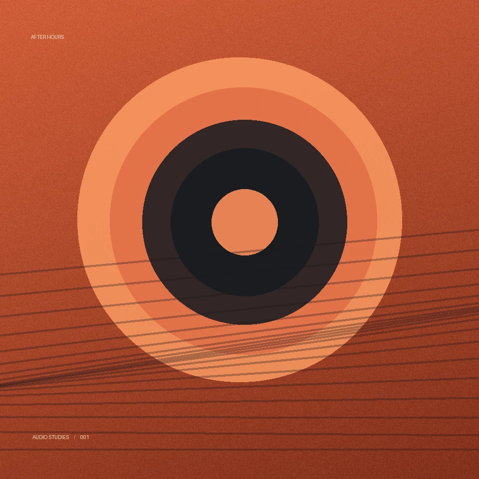
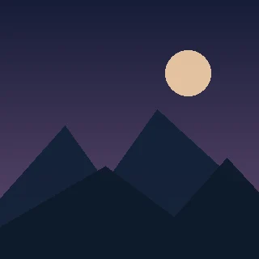

НОВИЙ РЕЛІЗ · 2026
AFTER
HOURS
AUDIO STUDIES
Чотири інструментальні композиції. Спокійний ритм, м’які синтезатори та звучання пізнього вечора. Музика для тих, хто цінує атмосферу та глибину.
ТРЕКЛИСТ
| # | НАЗВА | ТРИВАЛІСТЬ | Керування |
|---|---|---|---|
| 1 | Night Drive | 0:12 | |
| 2 |  Slow Motion | 0:12 | |
| 3 | Blue Hour | 0:12 | |
| 4 | Last Light | 0:12 |
Треків не знайдено